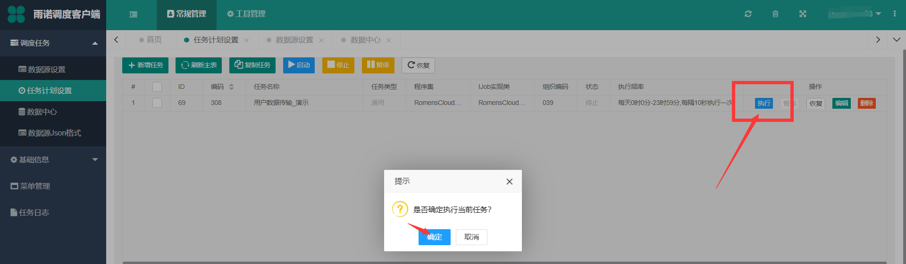
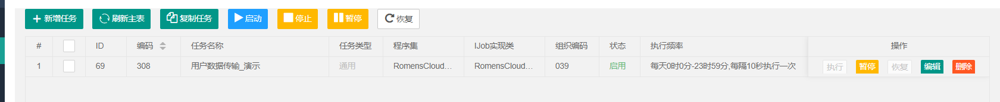
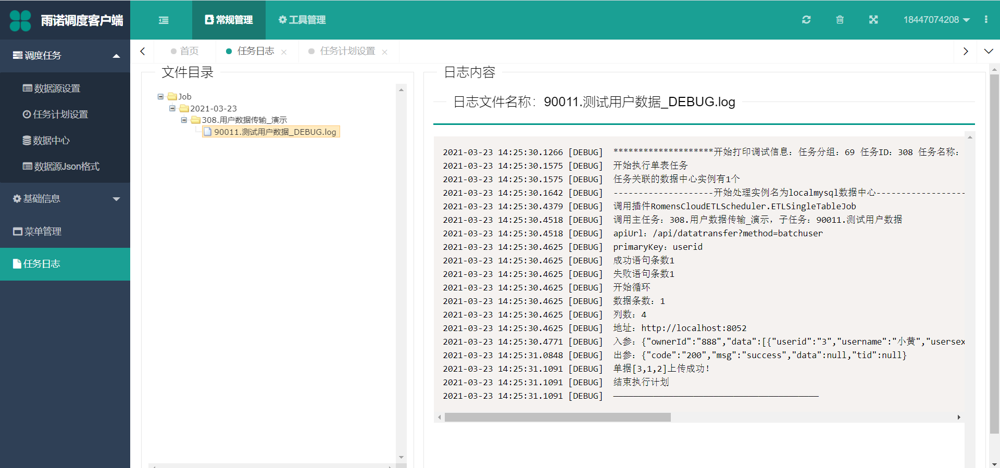

启动和停止¶
Note
针对启动我们要注意 的是 API先启动 ，保证调度平台抽取出数据后有入口点，否则先开启调度后开启API会造成部分数据传输失败
针对停止我们要注意 的是 先停止对应的调度任务 ，也是为了保证调度平台抽取出数据后有入口点
API启动¶
按照 启动前准备(API)设置 完毕，保存完 etlapi,json ，保证API是启用状态即可。如果再次修改API的 etlapi.json 配置文件，无需重新启动API，API会进行热加载，自动载入配置文件
调度任务启动¶
按照 启动前准备(调度平台)设置 完毕后（主要是配置 数据中心设置 、 数据源设置 、 任务计划设置 、 数据源JSON格式设置 ），启动对应的任务
 Note
启动我们要注意， 在任务运行后，修改调度任务计划设置内维护的etlsetting.json后，使用此配置文件的任务必须完全停止重启后有效，而修改数据源、数据中心或者json格式无需重启 ，下一次调度自己会进行更新
调度任务日志¶
Note
如果只看到入参json，看不到回参json，证明接口不通，只需要把 地址+apiurl 拿到浏览器进行测试